November
-
29Nov
Help switch on the Christmas lights
Sunday, 3.30pm to 5.30pm in the SuperValu Newcastle car park. The ReNewcastle Xmas Lights Group, in association with SuperValu, would love you to come along and help switch on the Christmas lights in Newcastle for 2026.
On the day there will be The Rams, Apollo Dance School, a fire performer, a face painter, and hot food and drinks. And a very special guest is dropping in, Santa himself. Everyone welcome.

-
24Nov
Celebrating Newcastle Community Week
Newcastle Community Week is a week of events put on by the clubs and groups around the village, from open gardens and a tea dance to bingo, a table quiz, a carnival and a gospel choir. This evening at St Finian's Community Hall brought everyone back together to look back on the week and to share out what it raised, with cheques presented to Newcastle Tidy Towns, St Finian's Parish and the Newcastle Folk Group.
Weeks like this only happen because so many people give their time to them, and the money raised goes straight back into the groups that keep the village going. There are plans to build on it and bring in fresh ideas for the next one, and new ideas and new faces are always welcome. Our thanks to everyone who took part, helped out, or came along.
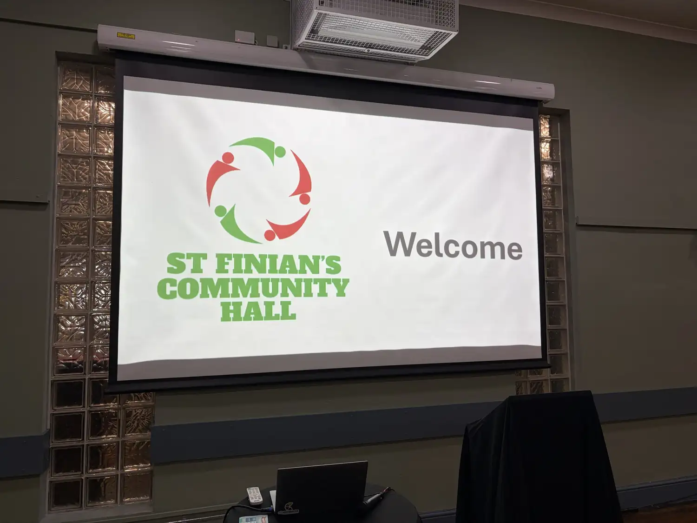
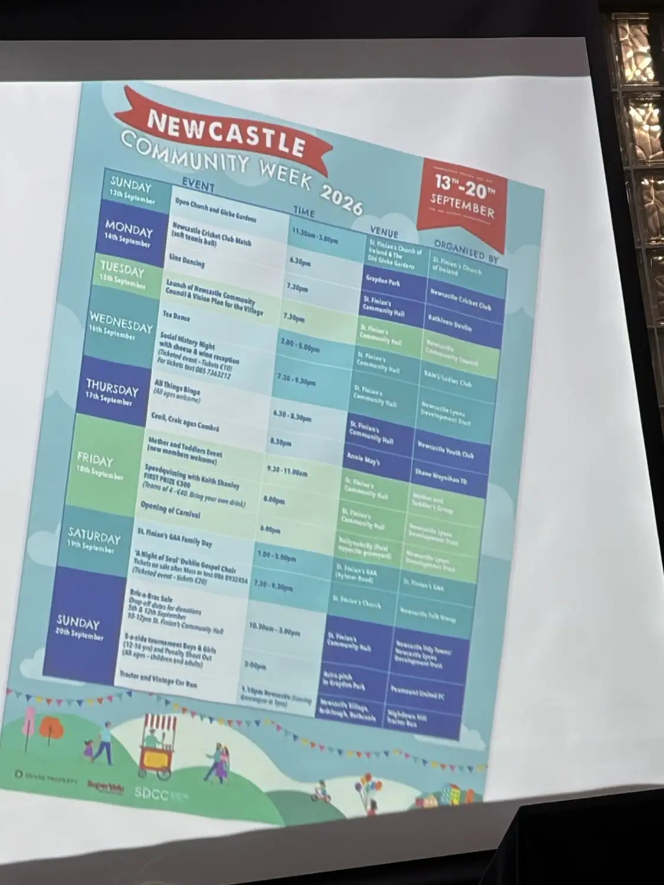
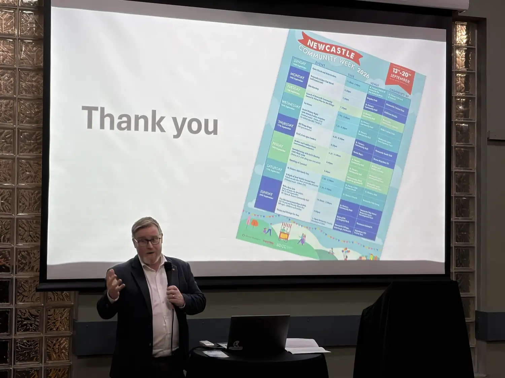
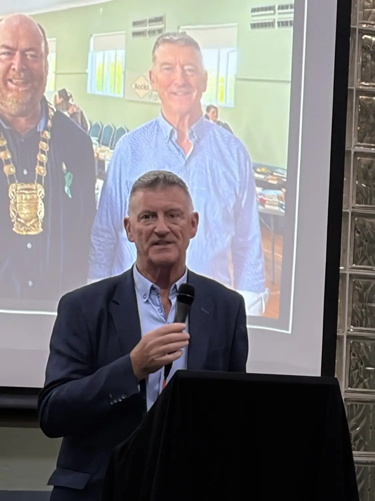
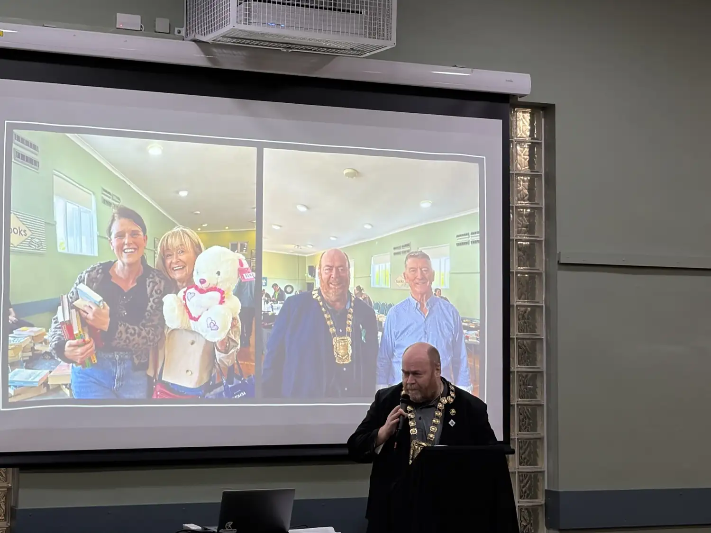
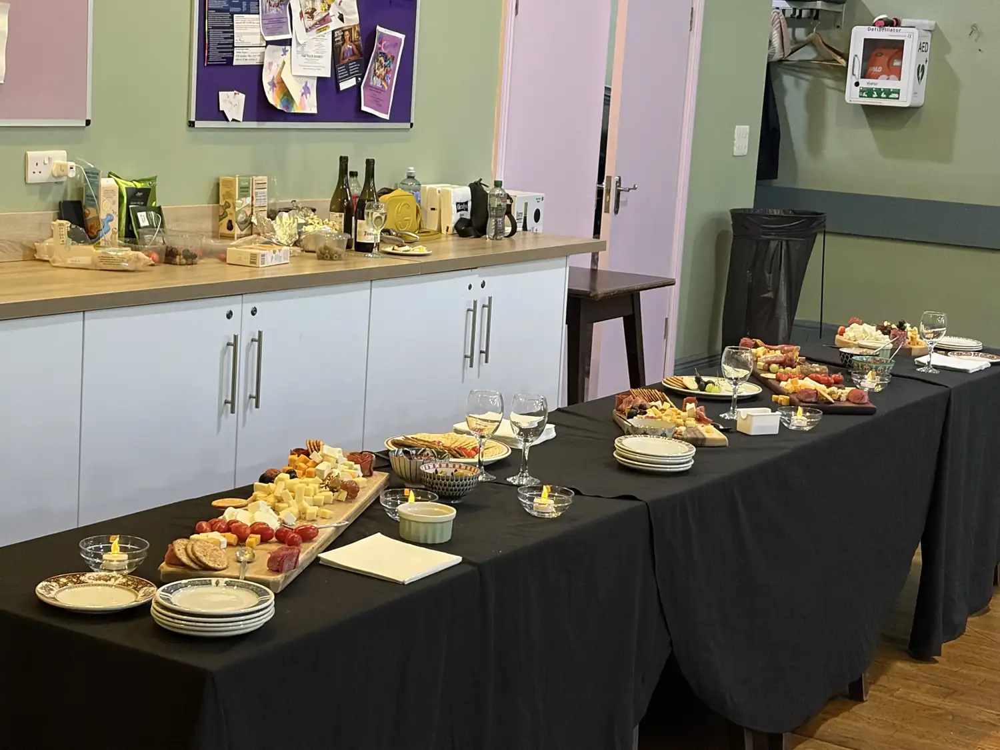
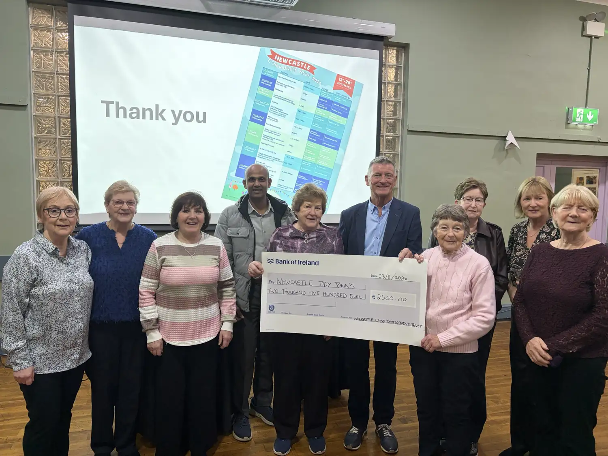
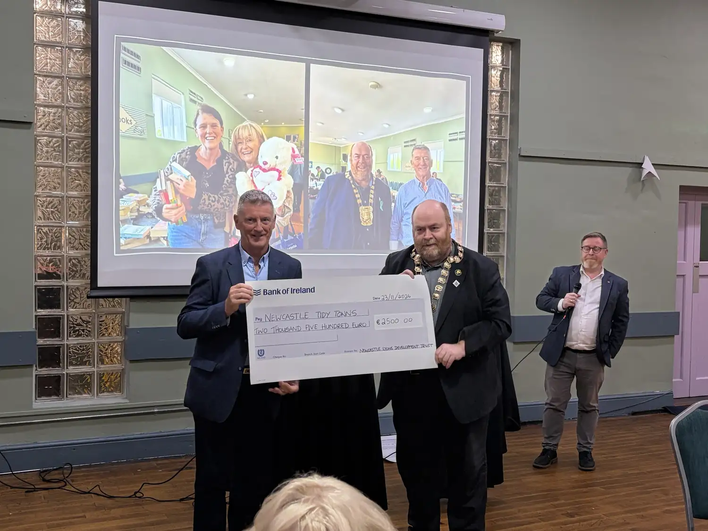
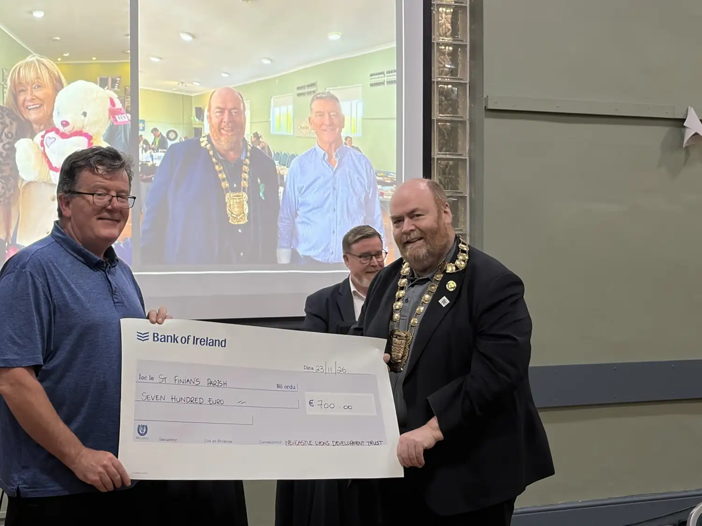
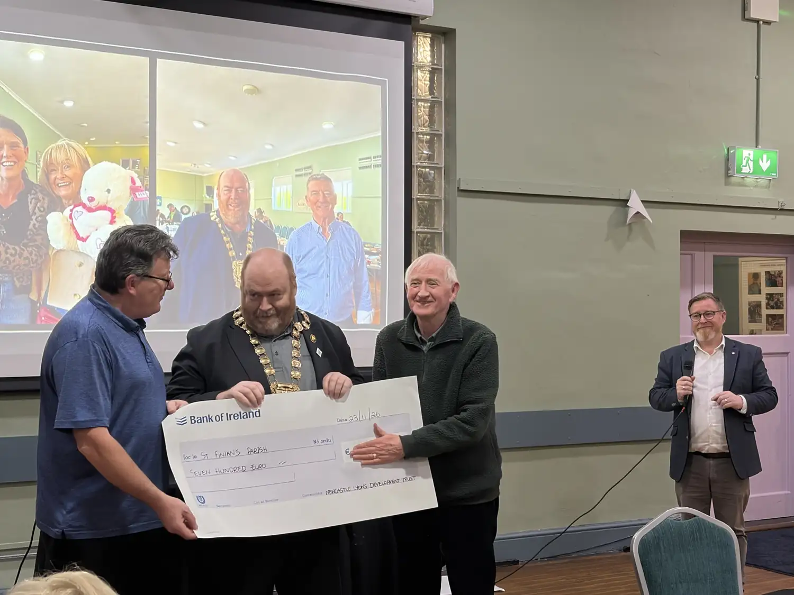
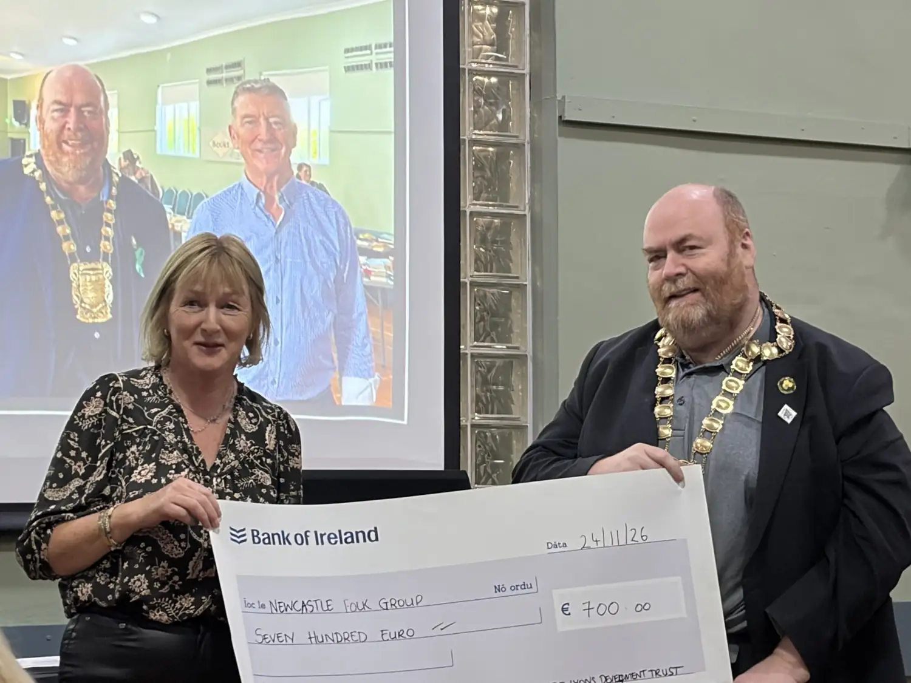
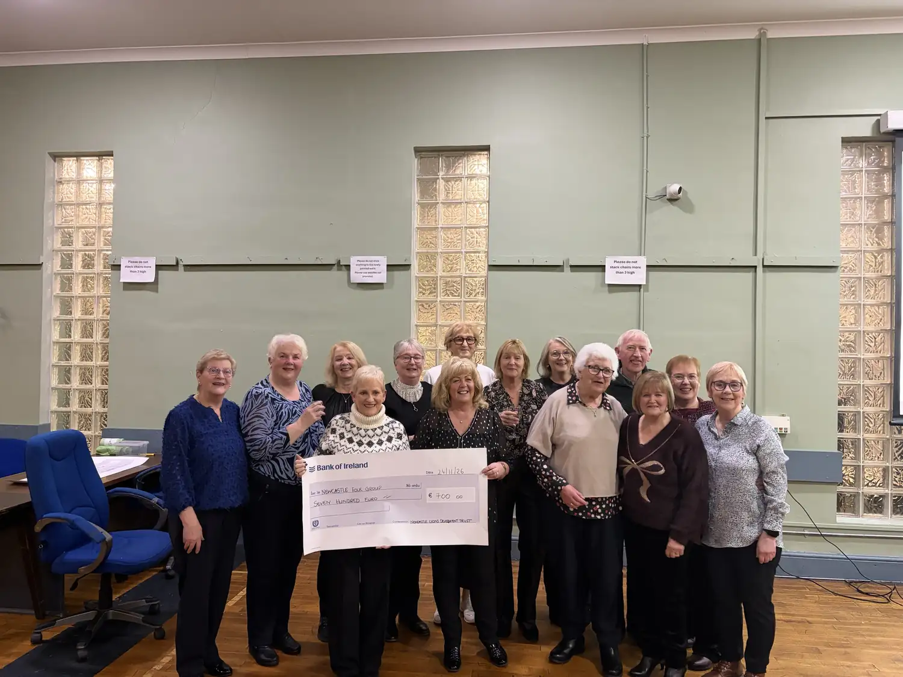
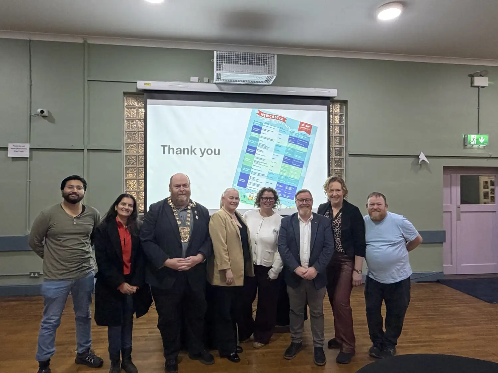
September
-
20Sep
Bric-a-Brac Sale
Sunday, 10:30am to 3pm at St Finian's Community Hall. We're running it together with Newcastle Lyons Development Trust as part of Community Week 2026. Come in for a look, everyone welcome.
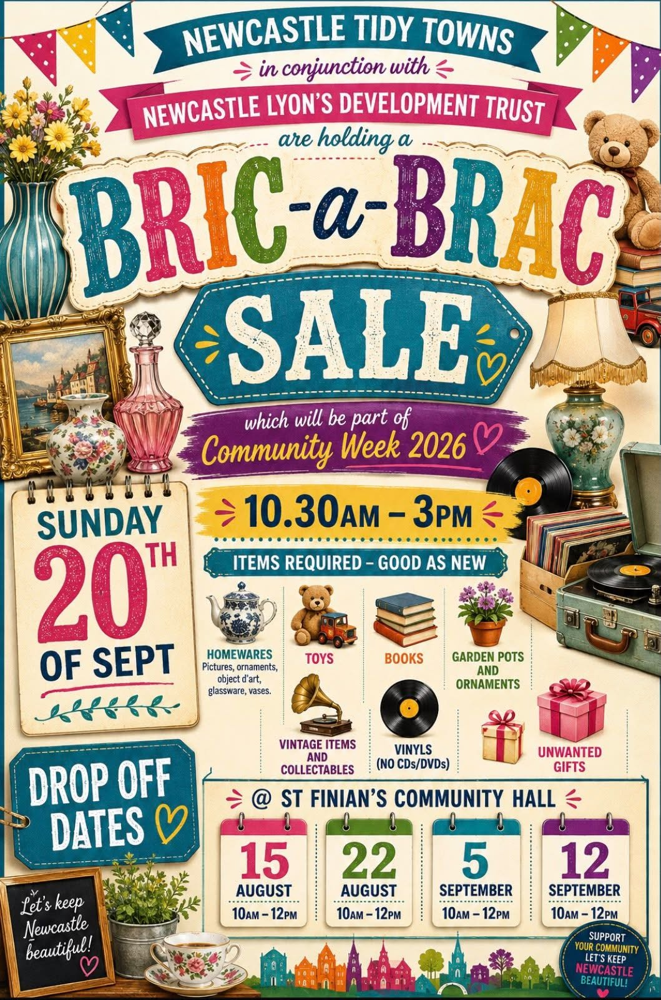
Got anything to donate?
We're taking in bits and pieces for the sale, as long as they're in good nick: homewares (pictures, ornaments, glassware, vases), toys, books, garden pots and ornaments, vintage bits and collectables, vinyl records (no CDs or DVDs) and any unwanted gifts.
When to drop things in
You can bring your donations to St Finian's Community Hall between 10am and 12pm on 15 August, 22 August, 5 September and 12 September.
Want us to give you a shout?
Follow us on Facebook, or send us an email and we'll let you know before the next clean-up.
Get in touch